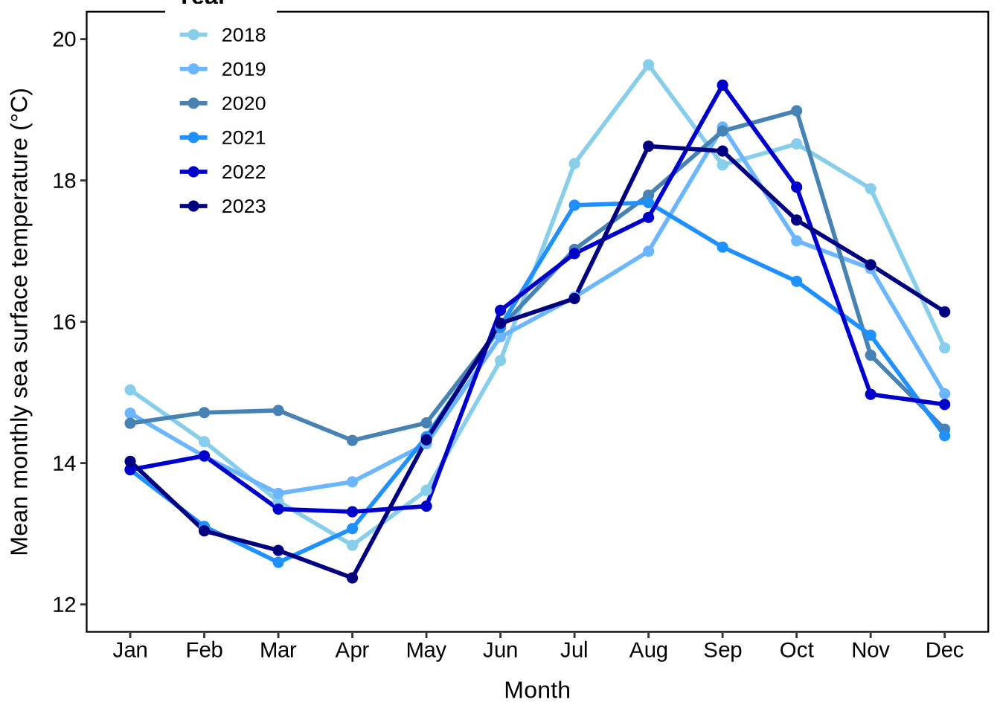
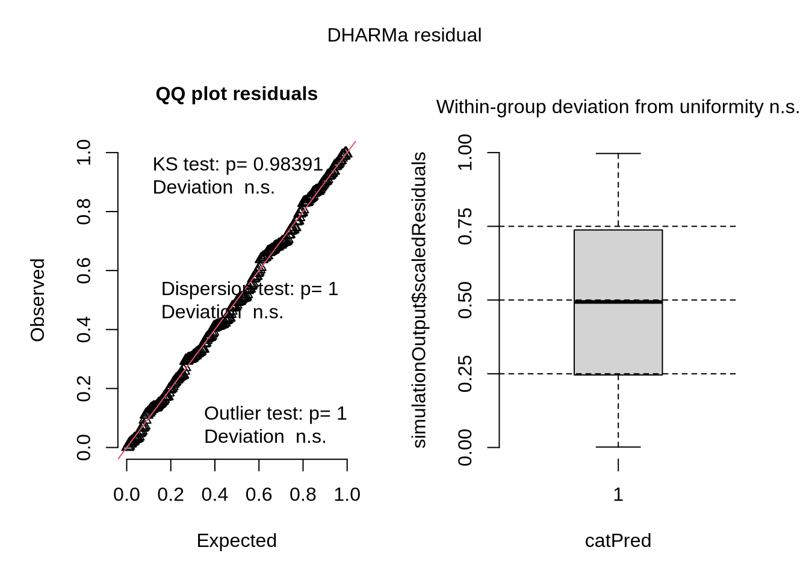
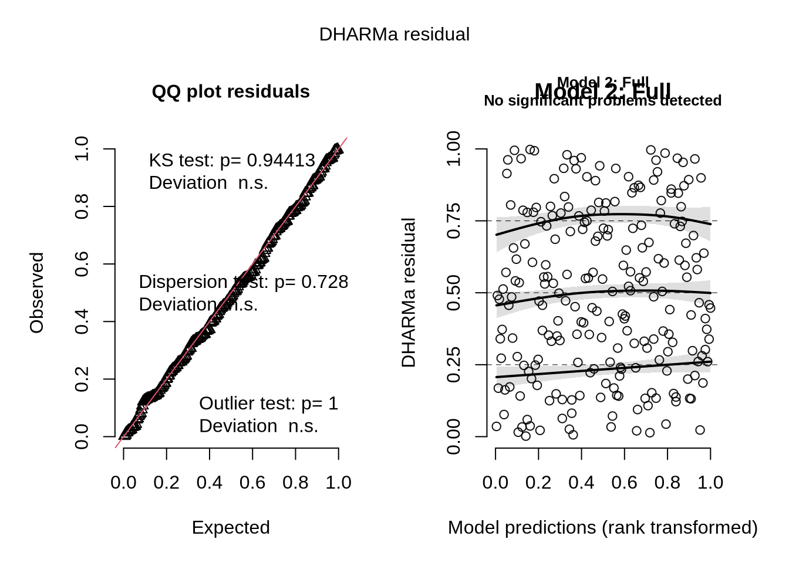
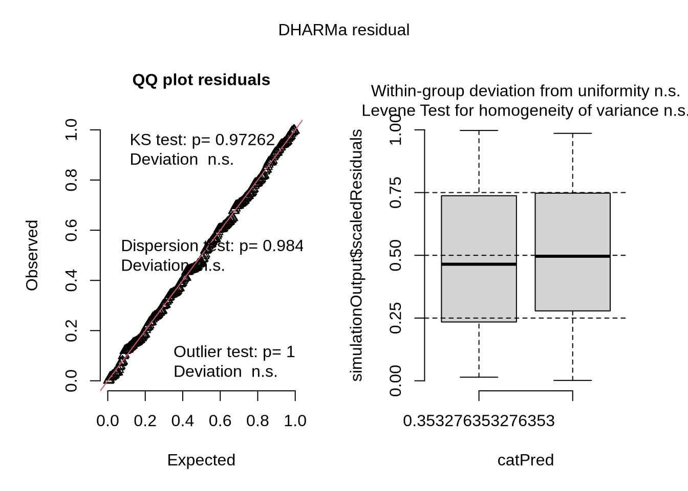
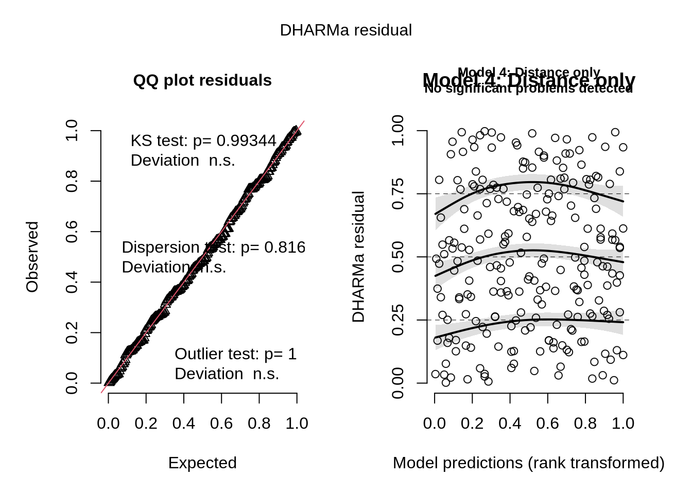
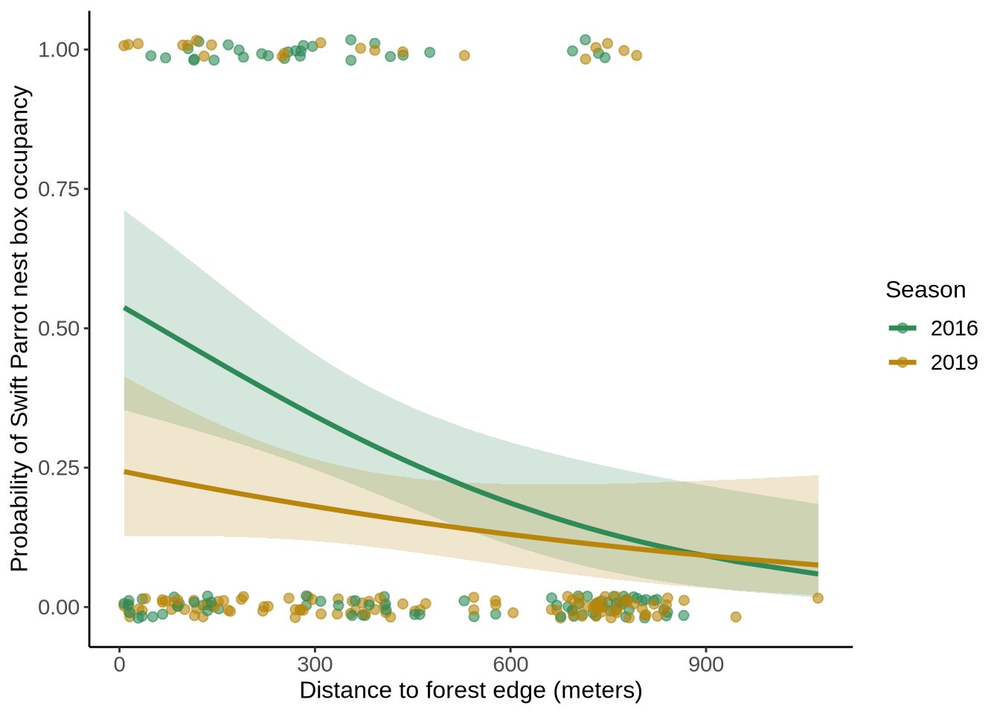

In part 1, the coworker used a Pearson’s correlation coefficient test to examine the relationship between distance from headwater (km) and annual total nitrogen load (kg year-1). In part 2, they used a one-way ANOVA to test for differences in average nitrogen load (kg year-1) between the five different sources.
More information needed
They could include descriptive statistics (mean ± SD) for each source to understand the magnitude and variability in nitrogen load across sources. Including the mean and standard deviation of nitrogen load for each source gives readers biological context, not just statistical significance, and supports interpretation of the ANOVA result.
Including effect size measures such as eta-squared or omega-squared would help the reader to understand the practical significance of these differences. Effect size tells us what proportion of the variance in nitrogen load is explained by source type, helping us to understand the magnitude of this effect in biological terms.
Suggestions for rewriting
Part 1: Distance from headwater showed a significant correlation with annual total nitrogen load, with sites farther from headwater sources associated with different nitrogen loading patterns (correlation test: r = [correlation coefficient], df = [degrees of freedom], p = 0.03, α = [significance level]).
Part 2: Nitrogen sources differed significantly in their average annual nitrogen load contributions to the San Joaquin River Delta, with some sources contributing substantially more than others (one-way ANOVA: F = [F-statistic], df = [degrees of freedom], p = 0.02, α = [significance level]). Post-hoc analyses revealed that [specific source types] contributed significantly more nitrogen load than [other source types] ([post-hoc test]: [test statistics and p-values for significant comparisons]).
Part 2: Data Visualization
Clean and summarize
# Create sst_clean object with data cleaning and summarizingsst_clean <- sst |># Convert date column to proper date formatmutate(date =ymd(date)) |># Extract year and month from datemutate(year =year(date),month =month(date, label =TRUE, abbr =TRUE)) |># Filter for years 2018-2023 onlyfilter(year >=2018& year <=2023) |># Group by year and month to calculate monthly meansgroup_by(year, month) |># Calculate mean monthly sea surface temperaturesummarise(mean_monthly_sst =mean(temp, na.rm =TRUE), .groups ="drop") |># Convert year to factor for proper ordering and visualizationmutate(year =as.factor(year)) |># Arrange by year and month for proper orderingarrange(year, month)# Display 5 random rows from sst_cleanset.seed(123) # for reproducibilitysst_clean |>slice_sample(n =5)
# A tibble: 5 × 3
year month mean_monthly_sst
<fct> <ord> <dbl>
1 2020 Jul 17.0
2 2022 Mar 13.3
3 2019 Feb 14.1
4 2023 Jul 16.3
5 2021 Jun 15.9
# Create the visualization matching the target figureggplot(sst_clean, aes(x = month, y = mean_monthly_sst, group = year, color = year)) +# Add line geometry connecting points by yeargeom_line(size =1) +# Add point geometry for individual data pointsgeom_point(size =2) +# Set up color gradient from light to dark blue for 2018-2023scale_color_manual(values =c("2018"="#87CEEB", # light blue"2019"="#6BB6FF", # "2020"="#4682B4", # "2021"="#1E90FF", # "2022"="#0000CD", # "2023"="#000080")) +# dark blue# Set y-axis limits and breaks to match the figurescale_y_continuous(limits =c(12, 20), breaks =seq(12, 20, by =2)) +# Customize axis labels and legendlabs(x ="Month",y ="Mean monthly sea surface temperature (°C)",color ="Year") +# Match the theme and styling of the target figuretheme_classic() +theme(# Add panel border (box around plot area)panel.border =element_rect(color ="black", fill =NA, linewidth =0.8),# White panel backgroundpanel.background =element_rect(fill ="white", color =NA),# Position legend inside plot area (top left)legend.position =c(0.15, 0.85),legend.background =element_rect(fill ="white", color =NA),legend.title =element_text(size =12, face ="bold"),legend.text =element_text(size =10),# Customize axis text and titlesaxis.text =element_text(size =11, color ="black"),axis.title =element_text(size =12, color ="black"),axis.title.x =element_text(margin =margin(t =10)),axis.title.y =element_text(margin =margin(r =10)),# Ensure complete axis boxaxis.line =element_blank() )

Part 3: Data Analysis
Response variable
The 1s and 0s in this dataset represent Swift Parrot nest box occupancy, where 1 indicates that a nest box was occupied by Swift Parrots for breeding, and 0 indicates that the box was either unoccupied or occupied by competitor species (Common Starlings or Tree Martins).
Purpose of study
Swift Parrots are critically endangered native birds that require conservation assistance, while Common Starlings and Tree Martins are either introduced species (starlings) or native competitors that can outcompete Swift Parrots for limited nesting sites. The study aims to understand whether nest boxes intended for Swift Parrot conservation are actually being used by the target species or by their competitors.
Difference in “seasons”
The two seasons are 2016 and 2019, representing early deployment (2016) when nest boxes were newly installed, and a follow-up assessment (2019) after three years had elapsed. This comparison allows researchers to understand how nest box occupancy patterns change over time as both target and competitor species become familiar with the artificial nesting sites.
d. Table of models
# Create a table of models to be testedmodels_table <-data.frame(Model_Number =c("Model 1", "Model 2", "Model 3", "Model 4"),Season =c("No", "Yes", "Yes", "No"),Distance_to_Forest_Edge =c("No", "Yes", "No", "Yes"),Model_Description =c("Null model (intercept only)","Season + Distance to forest edge + Season × Distance interaction","Season only","Distance to forest edge only" ))# Display the tablekable(models_table, caption ="Table 1. Logistic regression models tested for Swift Parrot nest box occupancy",col.names =c("Model", "Season", "Distance to Forest Edge", "Model Description"))
Table 1. Logistic regression models tested for Swift Parrot nest box occupancy
Model
Season
Distance to Forest Edge
Model Description
Model 1
No
No
Null model (intercept only)
Model 2
Yes
Yes
Season + Distance to forest edge + Season × Distance interaction
Model 3
Yes
No
Season only
Model 4
No
Yes
Distance to forest edge only
Run the models
# Clean the column name to avoid syntax issuesnest_boxes <- nest_boxes %>%rename(edge_distance =`edge distance`)# Model 1: Null modelmodel1_null <-glm(sp ~1, data = nest_boxes, family = binomial)# Model 2: Saturated model (full model with interaction)model2_full <-glm(sp ~ season * edge_distance, data = nest_boxes, family = binomial)# Model 3: Season onlymodel3_season <-glm(sp ~ season, data = nest_boxes, family = binomial)# Model 4: Distance onlymodel4_distance <-glm(sp ~ edge_distance, data = nest_boxes, family = binomial)
Check the diagnostics
# Check diagnostics for each modelpar(mfrow =c(2, 2)) # Set up 2x2 plotting layout# Model 1 diagnosticssim_residuals1 <-simulateResiduals(model1_null)plot(sim_residuals1, main ="Model 1: Null")

# Model 2 diagnostics sim_residuals2 <-simulateResiduals(model2_full)plot(sim_residuals2, main ="Model 2: Full")

# Model 3 diagnosticssim_residuals3 <-simulateResiduals(model3_season)plot(sim_residuals3, main ="Model 3: Season only")

# Model 4 diagnosticssim_residuals4 <-simulateResiduals(model4_distance)plot(sim_residuals4, main ="Model 4: Distance only")

# Reset plotting layoutpar(mfrow =c(1, 1))
Select the best model
# Compare models using AICmodel_comparison <-model.sel(model1_null, model2_full, model3_season, model4_distance)print(model_comparison)
# Identify best modelbest_model <-get.models(model_comparison, 1)[[1]]
The best model as determined by Akaike’s Information Criterion (AIC) was model2_full (season * edge_distance interaction model), which had the lowest AICc value (227.0) and received 78% of the model weight, indicating strong support. This model includes both season and distance to forest edge as predictors, plus their interaction term.
print("Best model summary:")
[1] "Best model summary:"
summary(best_model)
Call:
glm(formula = sp ~ season * edge_distance, family = binomial,
data = nest_boxes)
Coefficients:
Estimate Std. Error z value Pr(>|z|)
(Intercept) 8.712e+02 3.792e+02 2.297 0.0216 *
season -4.321e-01 1.880e-01 -2.298 0.0215 *
edge_distance -9.765e-01 8.365e-01 -1.167 0.2430
season:edge_distance 4.830e-04 4.146e-04 1.165 0.2440
---
Signif. codes: 0 '***' 0.001 '**' 0.01 '*' 0.05 '.' 0.1 ' ' 1
(Dispersion parameter for binomial family taken to be 1)
Null deviance: 236.81 on 226 degrees of freedom
Residual deviance: 218.85 on 223 degrees of freedom
AIC: 226.85
Number of Fisher Scoring iterations: 4
Visualize the model predictors
# Generate predictions for the best modelpredictions <-ggpredict(best_model, terms =c("edge_distance [all]", "season"))# Create the visualizationggplot(predictions, aes(x = x, y = predicted, color = group)) +# Add confidence intervalsgeom_ribbon(aes(ymin = conf.low, ymax = conf.high, fill = group), alpha =0.2, color =NA) +# Add prediction linesgeom_line(size =1.2) +# Add original data pointsgeom_point(data = nest_boxes, aes(x = edge_distance, y = sp, color =as.factor(season)),alpha =0.6, size =2, position =position_jitter(height =0.02)) +# Customize colors (avoid default)scale_color_manual(values =c("2016"="#2E8B57", "2019"="#B8860B"),name ="Season") +scale_fill_manual(values =c("2016"="#2E8B57", "2019"="#B8860B"),guide ="none") +# Set axis labels in fulllabs(x ="Distance to forest edge (meters)",y ="Probability of Swift Parrot nest box occupancy",color ="Season") +# Remove gridlines and customize themetheme_classic() +theme(panel.grid =element_blank(),axis.text =element_text(size =11),axis.title =element_text(size =12),legend.title =element_text(size =12),legend.text =element_text(size =11) )

Write a caption for your figure
Figure 1. Predicted probability of Swift Parrot (Lathamus discolor) nest box occupancy in relation to distance from forest edge and season (2016 vs 2019). Lines represent model predictions with 95% confidence intervals (shaded areas), and points show observed occupancy data. The model demonstrates how nest box occupancy patterns changed between the initial deployment year (2016) and follow-up assessment (2019).
Data from Stojanovic, D., Owens, G., Young, C.M., Alves, F. and Heinsohn, R. 2021. “Do nest boxes breed the target species or its competitors? A case study of a critically endangered bird.” Restoration Ecology. DOI: 10.1111/rec.13319.
Calculate model predictions
# Calculate predicted probabilities at 0m and 900m for each seasonpredictions_specific <-ggpredict(best_model, terms =c("edge_distance [0, 900]", "season"))# Display the predictionsprint(predictions_specific)
Our analysis revealed significant patterns in Swift Parrot nest box occupancy related to both distance from forest edge and season. At the forest edge (0 m), the predicted probability of Swift Parrot occupancy was 54.2% in 2016 and 24.5% in 2019, while at 900 m from the forest edge, occupancy probability was 9.2% in both 2016 and 2019.
The relationship between distance from forest edge and occupancy probability decreased as distance increased, suggesting that Swift Parrots prefer nest boxes closer to forest edges. This pattern makes biological sense because Swift Parrots are forest-dependent species that require proximity to their primary food sources (eucalyptus flowers) and nesting habitat, which are more abundant near forest edges.
The dramatic difference between seasons at the forest edge (54.2% vs 24.5%) suggests that Swift Parrots were much more likely to use boxes near forests in 2016 than in 2019. However, far from forests (900m), occupancy remained consistently low in both years (~9%). This interaction likely reflects increased competition from other species over time, habitat changes, or Swift Parrots learning to avoid certain areas due to predation risk or other factors.
Problem 4: Affective and exploratory visualizations
Comparing visualizations
My data in the first visualizations was simplified to fit into a single line plot such as productivity vs. hours of sleep. My final visualization was able to show all variables and productivity over time.
I used the same colors, keeping the themes consistent, otherwise I changed them a lot.
In the first visualizations we see productivity as a function of time of day and another graph showing productivity as a function of hours of sleep. My final visualization shows all independent variables (hrs of sleep, social context, etc.) in relation to productivity over time. I wanted to show change over time in my final visualization to see if some variables affecting productivty were more apparent as the quarter went on.
Week 9 I was told to clean up my legend and put more space between dates on x-axes to appear more visually appealing. I decided to keep those suggestions because I had thought I needed to clean up the graphs myself. The letterng had been bunched up so it was not as legible.